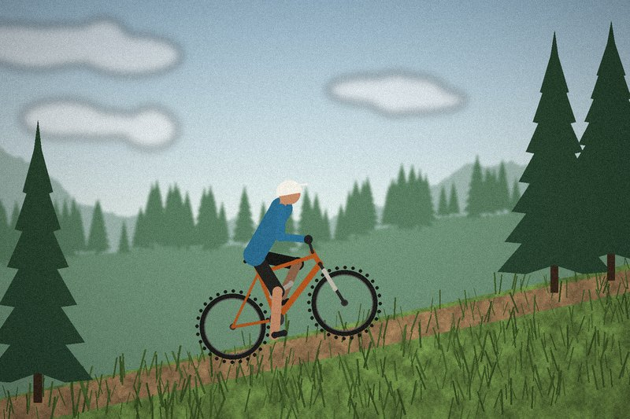
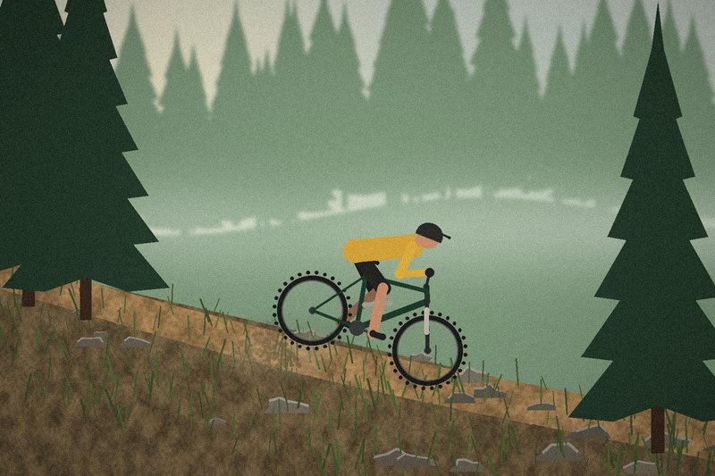
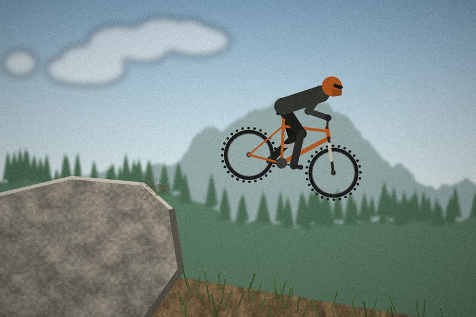
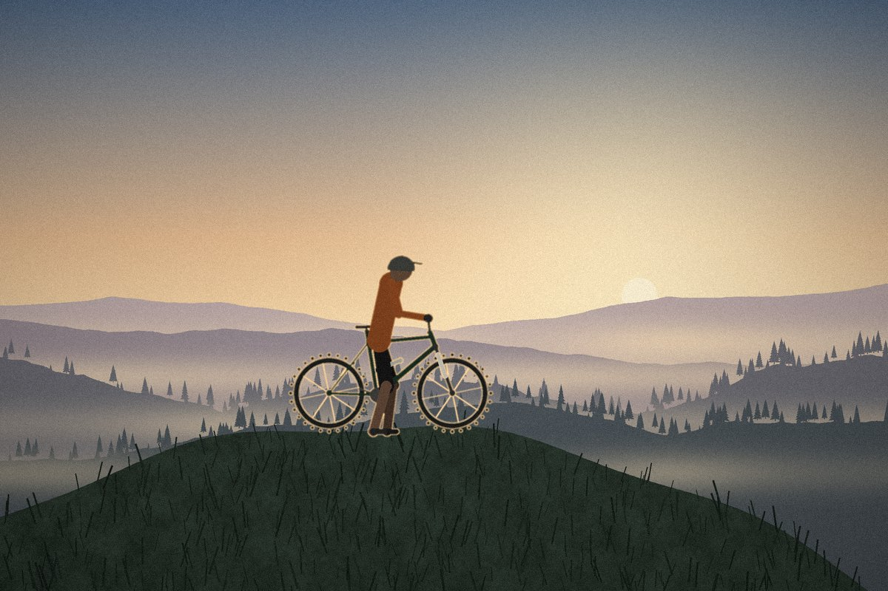

Beginner friendly
Cross-country
Long rides with climbs and fast flowing sections. XC is all about endurance, and light bikes make the climbs easier.
Riding styles, difficulty levels and the rules every rider should follow.
Mountain biking is not one sport but many. Each style has its own kind of trail, bike and rider.

Long rides with climbs and fast flowing sections. XC is all about endurance, and light bikes make the climbs easier.

The all-rounder. Trail riding mixes climbing and descending on singletrack, and it is what most riders do on a weekend.

Pedal up, race down. In enduro races only the downhill stages are timed, so riders need both fitness and technical skill.

Steep, fast and rough. Riders use lifts or shuttles to get up and full-face helmets and body armour for the way down.
Many bike parks and trail centres mark their trails with these symbols. Start easy and step up when you feel in control.
| Symbol | Level | What to expect | Good for |
|---|---|---|---|
| White circle | Easiest | Wide, smooth and nearly flat paths | First rides and children |
| Green circle | Easy | Gentle slopes, some roots and small bumps | Beginners |
| Blue square | Intermediate | Narrow singletrack, steeper climbs and rocks | Riders with basic skills |
| Black diamond | Difficult | Steep sections, drops and technical features | Experienced riders |
| Double black | Extremely difficult | Large jumps, very steep and exposed terrain | Experts only |
Trails are shared with walkers, runners and other riders. These simple rules keep them open and safe for everyone.
